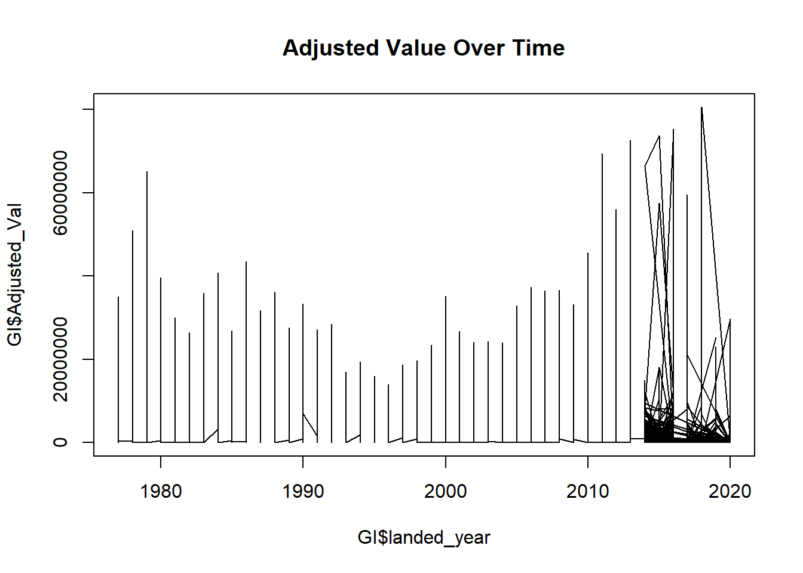
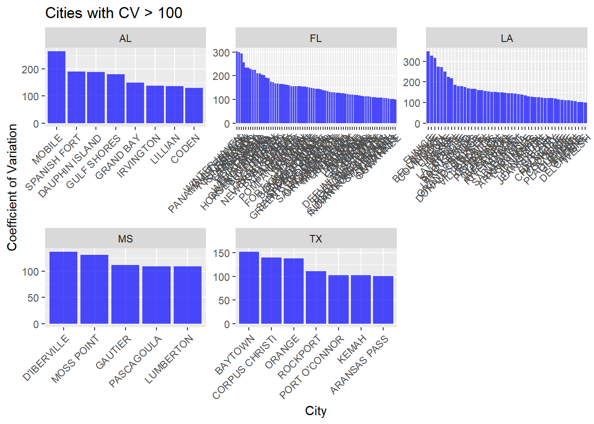
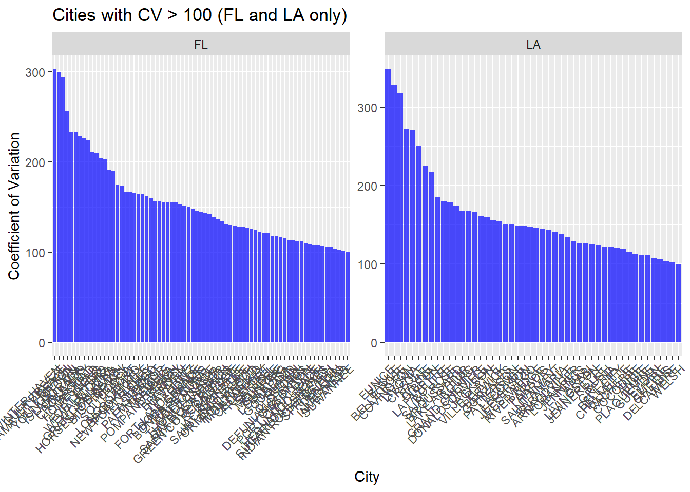
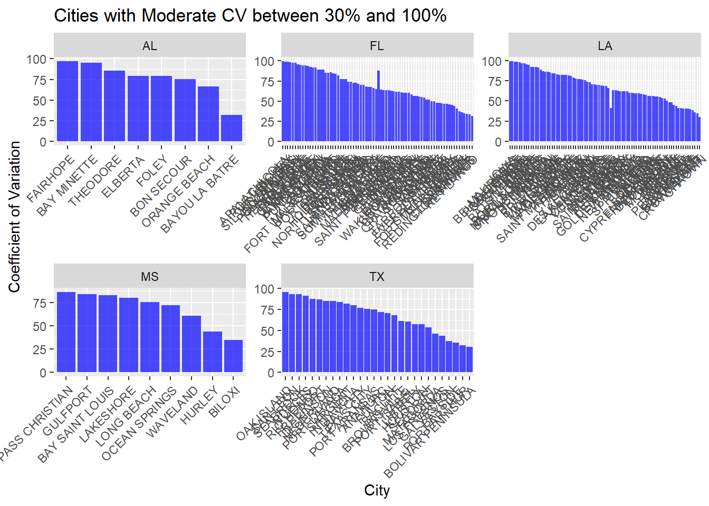
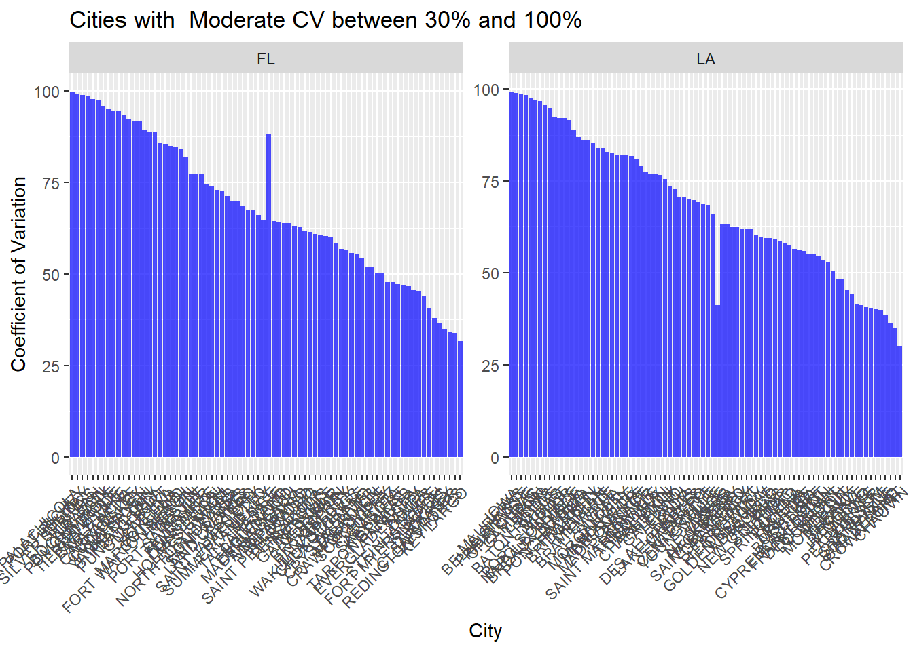
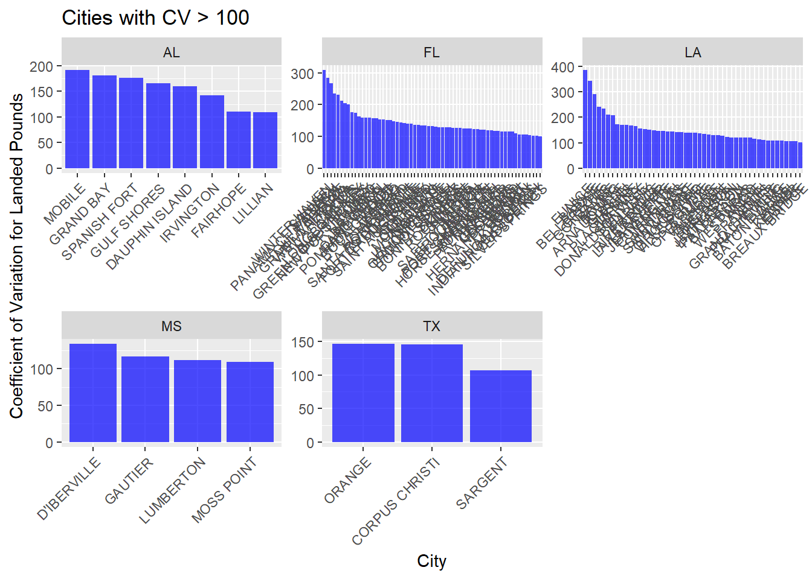
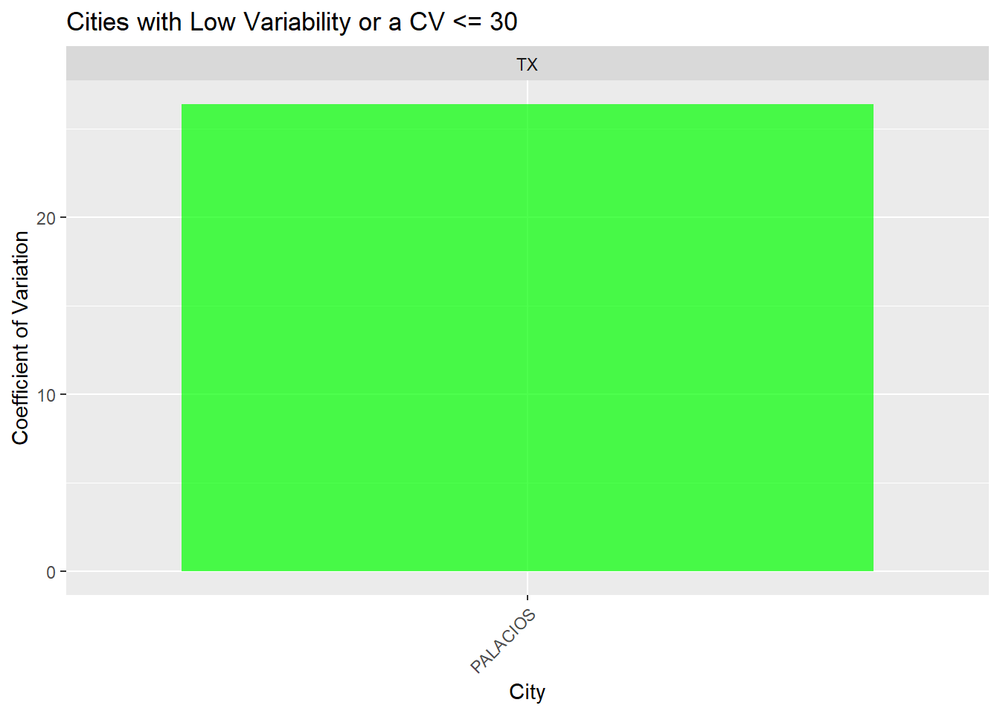
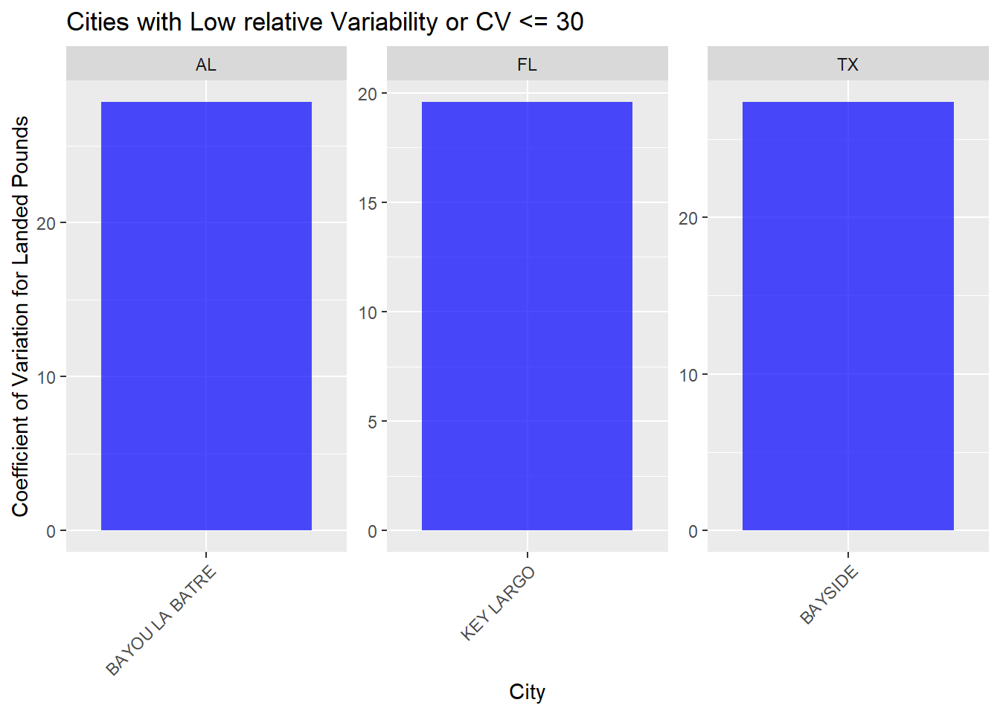

Coefficient of Variation
#Method Description: Coefficient of Variation (CV):
The Coefficient_of_Variation is a measure of relative variability and is calculated as the standard deviation divided by the mean, expressed as a percentage. In the context of your analysis, a higher Coefficient_of_Variation indicates greater relative variability in the Total_Val values over the years for a particular city.
So, the resulting DataFrame high_variability_cities gives you a list of cities where the landed fish values have the highest year-to-year variability based on the calculated coefficient of variation. Cities with higher values in this DataFrame are those that experience more significant fluctuations in the total landed fish values from one year to the next.
A coefficient of variation (CV) value of 100.6 for a city indicates a relatively high degree of variability in the context of your data. The coefficient of variation is expressed as a percentage and is calculated as the standard deviation divided by the mean, multiplied by 100.
Mathematically, CV is calculated using the formula:
CV=(SDMean)×100CV=( MeanSD )×100
Here:
SD is the standard deviation of the variable of interest (e.g., total landed fish values for a city). Mean is the mean (average) of the variable. A CV value greater than 100% implies that the standard deviation is larger than the mean, indicating substantial relative variability. It suggests that the data points (total landed fish values) are widely spread out from the mean, which could be due to fluctuations or volatility in the values over time.
In practical terms, a CV value of 100.6 indicates that the variability in the total landed fish values for that city is substantial, and the mean may not be a reliable summary measure on its own. Analysts often use the CV to assess the relative dispersion or stability of a variable, and a higher CV suggests higher relative variability.
Note: When calculating the coefficient of variation (CV) for a city, the mean (average) is computed based on the values available for that specific city across the years where data is available. It doesn’t consider data from other cities or years.
What constitutes Low and High Variability?
Low Variability:
In many cases, a CV below 10% is considered relatively low variability. This implies that the standard deviation is small compared to the mean, suggesting that the values are closely clustered around the average.
Moderate Variability:
A CV between 10% and 30% is often considered moderate variability. It indicates a moderate level of dispersion around the mean.
High Variability:
A CV above 30% is generally considered high variability. This suggests that the values are more spread out, and there is a substantial degree of fluctuation relative to the mean.
Dataset-specific Considerations:
The definition of low variability can vary depending on the nature of the data and the specific industry or field. Some datasets inherently have higher variability due to the nature of the measurements.
This is what where we need to have a conversation about how we will define high and low variability because as you will see in the analysis below most of the data points have variability that would be considered by general standards to be moderate to high variability.
##Data organization
Load Inflation Adjusted Data
Brief summary
# Display a summary of the GI data
summary(GI) landed_year data_supplier_st dealer_id corporate_name
Min. :1977 Length:475823 Length:475823 Length:475823
1st Qu.:1993 Class :character Class :character Class :character
Median :2002 Mode :character Mode :character Mode :character
Mean :2001
3rd Qu.:2011
Max. :2020
dealer_state county_name dealer_city zipcode
Length:475823 Length:475823 Length:475823 Length:475823
Class :character Class :character Class :character Class :character
Mode :character Mode :character Mode :character Mode :character
species_itis common_name live_lbs value
Min. : 5414 Length:475823 Min. : -10 Min. : -190
1st Qu.:161092 Class :character 1st Qu.: 41 1st Qu.: 53
Median :168791 Mode :character Median : 322 Median : 401
Mean :192794 Mean : 96661 Mean : 66539
3rd Qu.:170335 3rd Qu.: 3380 3rd Qu.: 4386
Max. :775091 Max. :602540946 Max. :78082845
NA's :9 NA's :997 NA's :20353
Inflation_index Adjust_factor Adjusted_Val
Min. : 33.43 Min. :1.000 Min. : -207
1st Qu.: 68.88 1st Qu.:1.159 1st Qu.: 74
Median : 81.03 Median :1.404 Median : 563
Mean : 81.87 Mean :1.482 Mean : 103924
3rd Qu.: 98.16 3rd Qu.:1.652 3rd Qu.: 6195
Max. :113.78 Max. :3.404 Max. :80520745
NA's :20353 # Create a plot using the GI data
plot(GI$landed_year, GI$Adjusted_Val, type = "l", main = "Adjusted Value Over Time")
###Clean and group the Species names
Most Valuable Species
Identify the most Valuable Commercial Fish Species landed in the Gulf of Mexico
# Group by fish species and calculate the total adjusted value
most_valuable <- GI %>%
group_by(common_name_cleaned) %>%
summarise(total_adjusted_value = sum(Adjusted_Val, na.rm = TRUE)) %>%
arrange(desc(total_adjusted_value))
# Select the top 10 species
MostValuable10 <- head(most_valuable, 10)
#install.packages(c("shiny", "shinydashboard"))
library(shiny)
# Print the table of the top 10 fish species sorted by total adjusted value
MostValuable10 %>%
kable("html", col.names = c("Fish Species", "Total Adjusted Value"), align = "c") %>%
kable_styling(bootstrap_options = "striped", full_width = FALSE, position = "center") %>%
column_spec(1, width = "70%") %>%
column_spec(2, width = "30%") %>%
cat()<table class="table table-striped" style="width: auto !important; margin-left: auto; margin-right: auto;">
<thead>
<tr>
<th style="text-align:center;"> Fish Species </th>
<th style="text-align:center;"> Total Adjusted Value </th>
</tr>
</thead>
<tbody>
<tr>
<td style="text-align:center;width: 70%; "> Brown Shrimp </td>
<td style="text-align:center;width: 30%; "> 17662967920 </td>
</tr>
<tr>
<td style="text-align:center;width: 70%; "> White Shrimp </td>
<td style="text-align:center;width: 30%; "> 12511132805 </td>
</tr>
<tr>
<td style="text-align:center;width: 70%; "> Pink Shrimp </td>
<td style="text-align:center;width: 30%; "> 2897587320 </td>
</tr>
<tr>
<td style="text-align:center;width: 70%; "> OYSTER, EASTERN </td>
<td style="text-align:center;width: 30%; "> 2745493994 </td>
</tr>
<tr>
<td style="text-align:center;width: 70%; "> MENHADENS </td>
<td style="text-align:center;width: 30%; "> 2443102691 </td>
</tr>
<tr>
<td style="text-align:center;width: 70%; "> Blue Crab </td>
<td style="text-align:center;width: 30%; "> 1493188136 </td>
</tr>
<tr>
<td style="text-align:center;width: 70%; "> Spiny Lobster </td>
<td style="text-align:center;width: 30%; "> 1344745704 </td>
</tr>
<tr>
<td style="text-align:center;width: 70%; "> Stone Crab </td>
<td style="text-align:center;width: 30%; "> 1096418580 </td>
</tr>
<tr>
<td style="text-align:center;width: 70%; "> Snapper </td>
<td style="text-align:center;width: 30%; "> 949368835 </td>
</tr>
<tr>
<td style="text-align:center;width: 70%; "> Grouper </td>
<td style="text-align:center;width: 30%; "> 883207380 </td>
</tr>
</tbody>
</table>MostValuable10# A tibble: 10 × 2
common_name_cleaned total_adjusted_value
<chr> <dbl>
1 Brown Shrimp 17662967920
2 White Shrimp 12511132805
3 Pink Shrimp 2897587320
4 OYSTER, EASTERN 2745493994
5 MENHADENS 2443102691
6 Blue Crab 1493188136
7 Spiny Lobster 1344745704
8 Stone Crab 1096418580
9 Snapper 949368835
10 Grouper 883207380##Top 10 most valuable species
library(dplyr)
Most_Val <- c("Brown Shrimp","White Shrimp","Pink Shrimp", "OYSTER, EASTERN", "Blue Crab", "Spiny Lobster", "Stone Crab", "Snapper", "Grouper") # excluded Menhadens
# Create a new data frame with only the top 10 species
top_10_data <- GI %>%
filter(common_name_cleaned %in% Most_Val) # this has over 50,000 records which is much smaller than the original data file which has so many more species
head(top_10_data) landed_year data_supplier_st dealer_id corporate_name dealer_state
1 1977 LA GS5108 INTRACOASTAL SEAFOOD INC LA
2 1977 LA GS5108 INTRACOASTAL SEAFOOD INC LA
3 1977 TX GS7103 FISHERMAN'S HARVEST TX
4 1977 TX GS7103 FISHERMAN'S HARVEST TX
5 1977 TX GS7102 JERI'S SEAFOOD, INC. TX
6 1977 TX GS7102 JERI'S SEAFOOD, INC. TX
county_name dealer_city zipcode species_itis common_name live_lbs value
1 VERMILION ABBEVILLE 70510 551570 Brown Shrimp 146564 65210
2 VERMILION ABBEVILLE 70510 551680 White Shrimp 102661 89977
3 CHAMBERS ANAHUAC 77514 551570 Brown Shrimp 37550 21570
4 CHAMBERS ANAHUAC 77514 551680 White Shrimp 29649 13218
5 CHAMBERS ANAHUAC 77514 551570 Brown Shrimp 19999 12788
6 CHAMBERS ANAHUAC 77514 551680 White Shrimp 230620 203456
Inflation_index Adjust_factor Adjusted_Val common_name_cleaned
1 33.426 3.404057 221979 Brown Shrimp
2 33.426 3.404057 306287 White Shrimp
3 33.426 3.404057 73426 Brown Shrimp
4 33.426 3.404057 44995 White Shrimp
5 33.426 3.404057 43531 Brown Shrimp
6 33.426 3.404057 692576 White Shrimpunique_species <- unique(top_10_data$common_name_cleaned)
print(unique_species)[1] "Brown Shrimp" "White Shrimp" "Pink Shrimp" "OYSTER, EASTERN"
[5] "Blue Crab" "Snapper" "Stone Crab" "Spiny Lobster"
[9] "Grouper" # Specify the file path and name
file_path <- "~/Resilience/UpdatedData/top_10_data.rds"
# Save the data frame to an RDS file
saveRDS(top_10_data, file = file_path)###Group by Year and City This will give you the cumulative inflation-adjusted values for each city in each year. A. Select only needed columns to avoid multiplication
library(dplyr)
# Step 1: Filter out rows with NA in dealer_city
top_10_data <- top_10_data %>%
filter(dealer_city != "#N/A", !is.na(dealer_city)) # Exclude rows with *N/A and NAs in dealer_city
top_10_data <- top_10_data %>%
filter(dealer_city != "UNRESOLVED" & dealer_city != "UNKNOWN")
# Step 2: Filter for values greater than 1 in Adjusted_Val
top_10_data <- top_10_data %>%
filter(Adjusted_Val > 1 & !is.na(Adjusted_Val))
#aggregate data from the dealer level to the city level
City_aggregation<- top_10_data %>%
group_by(landed_year, dealer_state, dealer_city) %>%
summarise(
total_live_lbs = sum(live_lbs),
total_value = sum(value),
total_adjusted_val = sum(Adjusted_Val)
)`summarise()` has grouped output by 'landed_year', 'dealer_state'. You can
override using the `.groups` argument.# Print the aggregated and percentage change data
print(City_aggregation)# A tibble: 10,621 × 6
# Groups: landed_year, dealer_state [220]
landed_year dealer_state dealer_city total_live_lbs total_value
<int> <chr> <chr> <dbl> <dbl>
1 1977 AL BAYOU LA BATRE 9386658 13615361
2 1977 AL BON SECOUR 3772412 4992808
3 1977 AL CODEN 4334387 5307025
4 1977 AL DAUPHIN ISLAND 1789636 2176367
5 1977 AL GULF SHORES 901252 1097896
6 1977 AL MOBILE 1759620 1869239
7 1977 FL APALACHICOLA 1283087 1426407
8 1977 FL CANTONMENT 10180 12165
9 1977 FL CARRABELLE 238262 242517
10 1977 FL CORTEZ 53249 69496
# ℹ 10,611 more rows
# ℹ 1 more variable: total_adjusted_val <dbl># Save the selected data to a new file (e.g., CSV format)
write.csv(City_aggregation, "City_aggregation.csv", row.names = FALSE)A.Identify Cities with High Variation
##1.Values:Calculate Coefficient of Variation for Total Landed Values Calculate the coefficient of variation for each city using the grouped data. The coefficient of variation is the ratio of the standard deviation to the mean, multiplied by 100.
cv_data <- City_aggregation %>%
group_by(dealer_city, dealer_state) %>%
filter(n() >= 10) %>% # Keep groups with 10 or more data points for years
summarize(
Mean_Total_Val = mean(total_adjusted_val, na.rm = TRUE),
SD_Total_Val = sd(total_adjusted_val, na.rm = TRUE),
Coefficient_of_Variation = ifelse(!is.na(SD_Total_Val), round((SD_Total_Val / Mean_Total_Val) * 100, 2), NA)
)`summarise()` has grouped output by 'dealer_city'. You can override using the
`.groups` argument.Identify Cities with High Variability
##Identify Cities with High Variability in Landed Values
high_variability_cities <- cv_data[order(-cv_data$Coefficient_of_Variation), ]
library(openxlsx)
# Specify the full file path and name
file_path <- "C:/Users/Suzana.Mic/Documents/Resilience/CV_Analysis/Output/high_variability_cities.xlsx"
# Write the DataFrame to an Excel file
write.xlsx(high_variability_cities, file_path, rowNames = FALSE)##Graphical Representation Bar Plot
library(ggplot2)
# Filter cities with CV > 100
high_cv_cities <- subset(high_variability_cities, Coefficient_of_Variation > 100)
# Bar plot for cities with high CV, facet by state
ggplot(high_cv_cities, aes(x = reorder(dealer_city, -Coefficient_of_Variation), y = Coefficient_of_Variation)) +
geom_bar(stat = "identity", fill = "blue", alpha = 0.7) +
labs(title = "Cities with CV > 100", x = "City", y = "Coefficient of Variation") +
theme(axis.text.x = element_text(angle = 45, hjust = 1)) +
facet_wrap(~ dealer_state, scales = "free")
Bar plot for FL and LA: High - Values
# Filter FL and LA
fl_la_cities <- subset(high_cv_cities, dealer_state %in% c("FL", "LA"))
# Bar plot for FL and LA
ggplot(fl_la_cities, aes(x = reorder(dealer_city, -Coefficient_of_Variation), y = Coefficient_of_Variation)) +
geom_bar(stat = "identity", fill = "blue", alpha = 0.7) +
labs(title = "Cities with CV > 100 (FL and LA only)", x = "City", y = "Coefficient of Variation") +
theme(axis.text.x = element_text(angle = 45, hjust = 1)) +
facet_wrap(~ dealer_state, scales = "free")
Bar plot for Moderate Variability: High - Values
moderate_CV_val <- subset(high_variability_cities, Coefficient_of_Variation > 30 & Coefficient_of_Variation <= 100)
# Bar plot for cities with high CV, facet by state
ggplot(moderate_CV_val, aes(x = reorder(dealer_city, -Coefficient_of_Variation), y = Coefficient_of_Variation)) +
geom_bar(stat = "identity", fill = "blue", alpha = 0.7) +
labs(title = "Cities with Moderate CV between 30% and 100%", x = "City", y = "Coefficient of Variation") +
theme(axis.text.x = element_text(angle = 45, hjust = 1)) +
facet_wrap(~ dealer_state, scales = "free")
Bar plot for FL and LA: moderate variability
# Filter FL and LA
fl_la_cities_M <- subset(moderate_CV_val, dealer_state %in% c("FL", "LA"))
# Bar plot for FL and LA
ggplot(fl_la_cities_M, aes(x = reorder(dealer_city, -Coefficient_of_Variation), y = Coefficient_of_Variation)) +
geom_bar(stat = "identity", fill = "blue", alpha = 0.7) +
labs(title = "Cities with Moderate CV between 30% and 100%", x = "City", y = "Coefficient of Variation") +
theme(axis.text.x = element_text(angle = 45, hjust = 1)) +
facet_wrap(~ dealer_state, scales = "free")
2.Calculate Coefficient of Variation for Total Landed Pounds
cv_lbs <- City_aggregation %>%
group_by(dealer_city, dealer_state) %>%
filter(n() >= 10) %>% # Keep groups with 10 or more data points for years
summarize(
Mean_Total_lbs = mean(total_live_lbs, na.rm = TRUE),
SD_Total_lbs = sd(total_live_lbs, na.rm = TRUE),
CoefVar_lbs = ifelse(!is.na(SD_Total_lbs), round((SD_Total_lbs / Mean_Total_lbs) * 100, 2), NA)
)`summarise()` has grouped output by 'dealer_city'. You can override using the
`.groups` argument.##Identify Cities with High Variability: Pounds
high_cities_LBS <- cv_lbs[order(-cv_lbs$CoefVar_lbs), ]
library(openxlsx)
# Specify the full file path and name
file_path <- "C:/Users/Suzana.Mic/Documents/Resilience/CV_Analysis/Output/high_cities_LBS.xlsx"
# Write the DataFrame to an Excel file
write.xlsx(high_cities_LBS, file_path, rowNames = FALSE)##Graphical Representation Bar Plot High variability for Pounds Landed
library(ggplot2)
# Filter cities with CV > 100
cv_cities_lbs <- subset(high_cities_LBS, CoefVar_lbs > 100)
# Bar plot for cities with high CV, facet by state
ggplot(cv_cities_lbs, aes(x = reorder(dealer_city, -CoefVar_lbs), y = CoefVar_lbs)) +
geom_bar(stat = "identity", fill = "blue", alpha = 0.7) +
labs(title = "Cities with CV > 100", x = "City", y = "Coefficient of Variation for Landed Pounds") +
theme(axis.text.x = element_text(angle = 45, hjust = 1)) +
facet_wrap(~ dealer_state, scales = "free")
Bar plot for FL and LA: High Variability Pounds Landed
# Filter FL and LA
fl_la_cities_lbs <- subset(cv_cities_lbs, dealer_state %in% c("FL", "LA"))
# Bar plot for FL and LA
ggplot(fl_la_cities_lbs, aes(x = reorder(dealer_city, -CoefVar_lbs), y = CoefVar_lbs)) +
geom_bar(stat = "identity", fill = "blue", alpha = 0.7) +
labs(title = "Cities with CV > 100 (FL and LA only)", x = "City", y = "Coefficient of Variation for Landed Pounds") +
theme(axis.text.x = element_text(angle = 45, hjust = 1)) +
facet_wrap(~ dealer_state, scales = "free")
B. Identify Cities with Low Variability
##1.Value of Landed Fish
# Sort the DataFrame in descending order based on Coefficient_of_Variation
sorted_low_variability_cities <- cv_data[order(cv_data$Coefficient_of_Variation, decreasing = TRUE), ]
# Filter cities with CV equal or smaller than 60
low_variability_cities <- sorted_low_variability_cities[sorted_low_variability_cities$Coefficient_of_Variation <= 60, ]
# Specify the full file path and name for the low variability cities
file_path_low_variability <- "C:/Users/Suzana.Mic/Documents/Resilience/CV_Analysis/Output/low_variability_cities.xlsx"
# Write the DataFrame to an Excel file
library(openxlsx)
write.xlsx(low_variability_cities, file_path_low_variability, rowNames = FALSE)##Graphical Representation: low variability Bar Plot
library(ggplot2)
# Filter cities with CV below 30%
low_variability_cities <- subset(low_variability_cities, Coefficient_of_Variation <= 30)
# Bar plot for cities with low CV, facet by state
ggplot(low_variability_cities, aes(x = reorder(dealer_city, Coefficient_of_Variation), y = Coefficient_of_Variation)) +
geom_bar(stat = "identity", fill = "green", alpha = 0.7) +
labs(title = "Cities with Low Variability or a CV <= 30", x = "City", y = "Coefficient of Variation") +
theme(axis.text.x = element_text(angle = 45, hjust = 1)) +
facet_wrap(~ dealer_state, scales = "free")
##1.Pounds of Landed Fish: Low variability
#Sort the DataFrame in descending order based on Coefficient_of_Variation
sorted_low_variability_cities_LBS <- cv_lbs[order(cv_lbs$CoefVar_lbs, decreasing = TRUE), ]
# Filter cities with CV equal or smaller than 60
low_variability_cities_LBS <- sorted_low_variability_cities_LBS[sorted_low_variability_cities_LBS$CoefVar_lbs <= 30, ]
library(openxlsx)
# Specify the full file path and name
file_path <- "C:/Users/Suzana.Mic/Documents/Resilience/CV_Analysis/Output/low_variability_cities_LBS.xlsx"
# Write the DataFrame to an Excel file
write.xlsx(low_variability_cities_LBS, file_path, rowNames = FALSE)##Graphical Representation Bar Plot
library(ggplot2)
# Bar plot for cities with high CV, facet by state
ggplot(low_variability_cities_LBS, aes(x = reorder(dealer_city, -CoefVar_lbs), y = CoefVar_lbs)) +
geom_bar(stat = "identity", fill = "blue", alpha = 0.7) +
labs(title = "Cities with Low relative Variability or CV <= 30", x = "City", y = "Coefficient of Variation for Landed Pounds") +
theme(axis.text.x = element_text(angle = 45, hjust = 1)) +
facet_wrap(~ dealer_state, scales = "free")